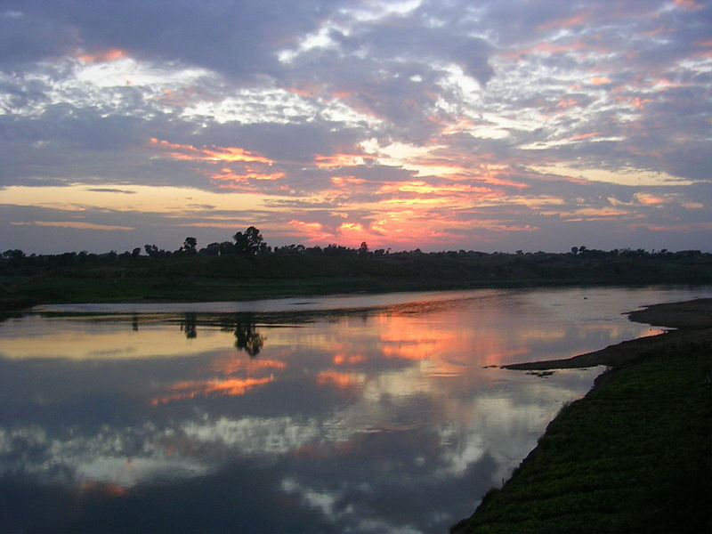

Welcome to....... The Heart of India
MADHYA PRADESH
Madhya Pradesh is the fifth largest state of India. Its capital is Bhopal and the largest city is Indore.Three sites in Madhya Pradesh have been declared World Heritage Sites by UNESCO: the Khajuraho Group of Monuments (1986) including Devi Jagadambi temple, Rewa, Buddhist Monuments at Sanchi (1989) and the Rock Shelters of Bhimbetka (2003). Other architecturally significant or scenic sites include Ajaigarh, Amarkantak, Asirgarh, Bandhavgarh, Bawangaja, Bhopal, Vidisha, Chanderi, Chitrakuta, Dhar, Gwalior, Indore, Jabalpur, Burhanpur, Maheshwar, Mandleshwar, Mandu, Omkareshwar, Orchha, Pachmarhi, Shivpuri, Sonagiri, Mandla and Ujjain.
The Narmada is the longest river in Madhya Pradesh. It flows westward through a rift valley, with the Vindhya ranges sprawling along its northern bank and the Satpura range of mountains along the southern.The Tapti River runs parallel to Narmada, and also flows through a rift valley. The Narmada–Tapti systems carry and enormous volume of water and provide drainage for almost a quarter of the land area of Madhya Pradesh.
The Narmada River of Madhya Pradesh..........

Flora and Fauna
Madhya Pradesh is home to 9 National Parks, including Bandhavgarh National Park, Kanha National Park, Satpura National Park, Sanjay National Park, Madhav National Park, Van Vihar National Park, Mandla Plant Fossils National Park, Panna National Park, and Pench National Park.There are also a number of natural preserves, including Amarkantak, Bagh Caves, Balaghat, Bori Natural Reserve, Ken Gharial, Ghatigaon, Kuno Palpur, Narwar, Chambal, Kukdeshwar, Narsinghgarh, Nora Dehi, Pachmarhi, Panpatha, Shikarganj, Patalkot and Tamia. Pachmarhi Biosphere Reserve in Satpura Range, Amarkantak biosphere reserve and panna national park are three of the 18 biosphere reserves in India. Barasingha is the state animal and dudhraj is the state bird of Madhya Pradesh.
Based on composition, the teak and sal forests are the important forest formations in the state. Bamboo-bearing areas are widely distributed.
Industries
Madhya Pradesh has 5 Special Economic Zones (SEZs): 3 IT/ITeS (Indore, Gwalior), 1 mineral-based (Jabalpur) and 1 agro-based (Jabalpur). In October 2011, approval was given to 14 proposed SEZs, out of which 10 were IT/ITeS-based. Indore is the major commercial centre of the state. Because of the state's central location, a number of consumer goods companies have established manufacturing bases in MP.The state has the largest reserves of diamond and copper in India. Other major mineral reserves include those of coal, coalbed methane, manganese and dolomite.